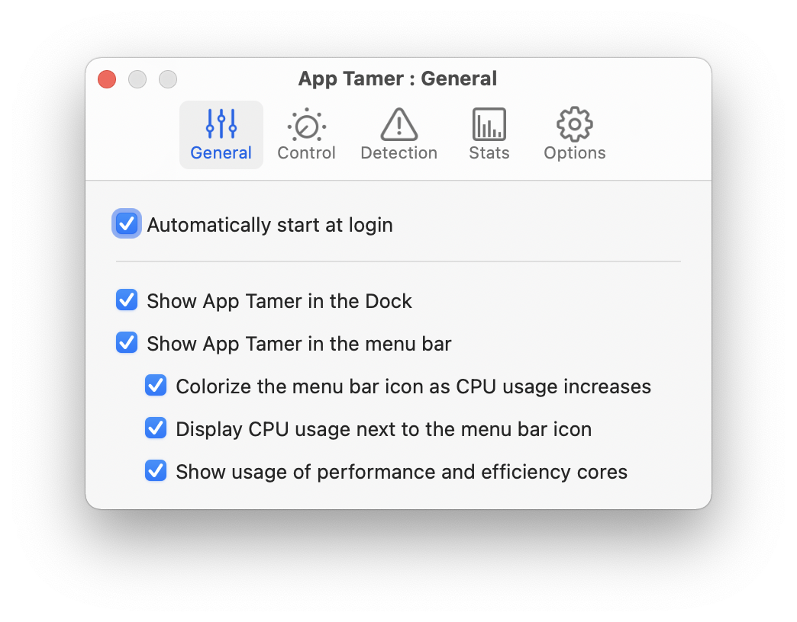
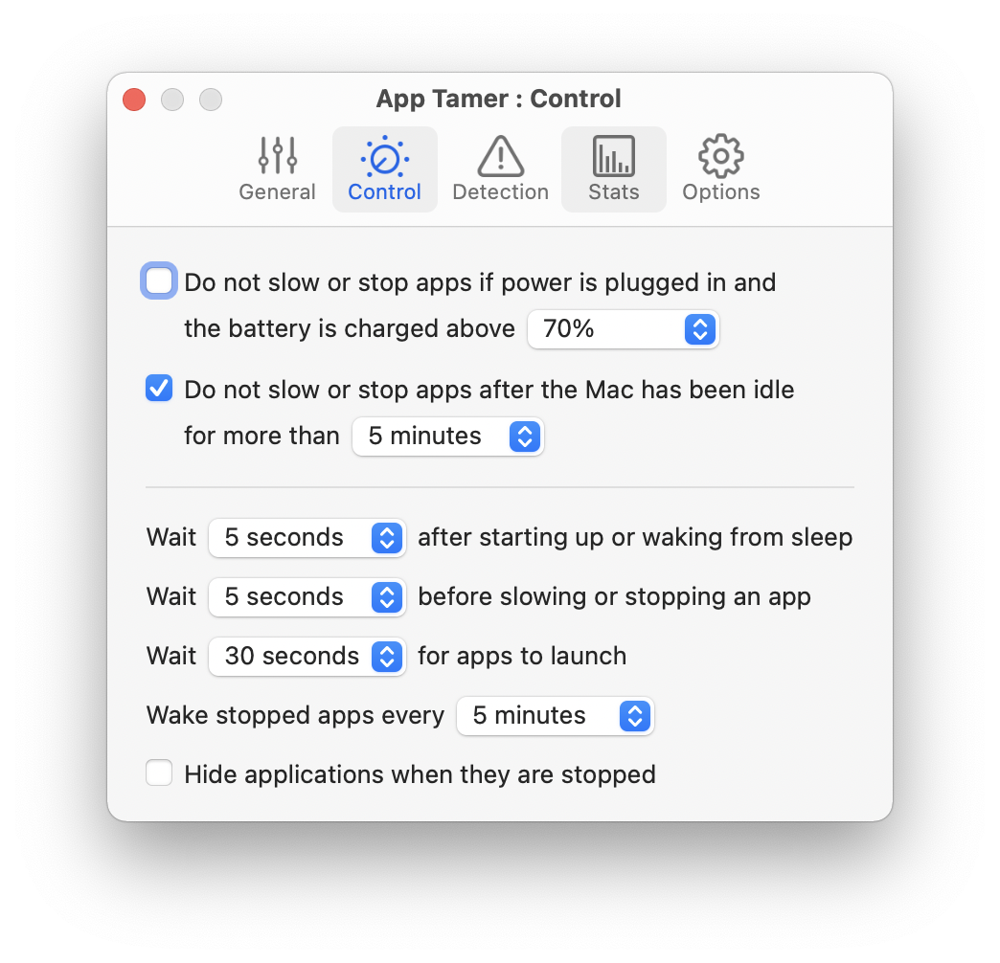
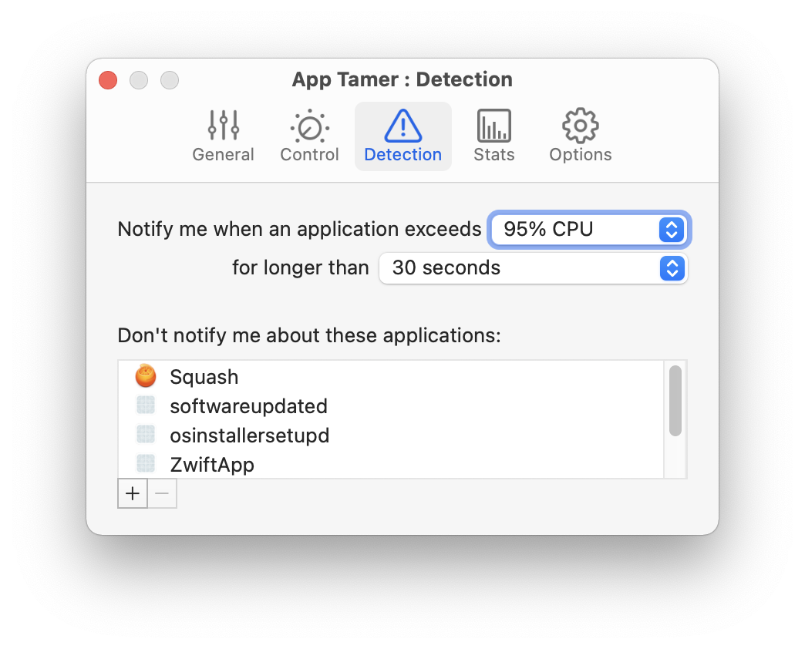
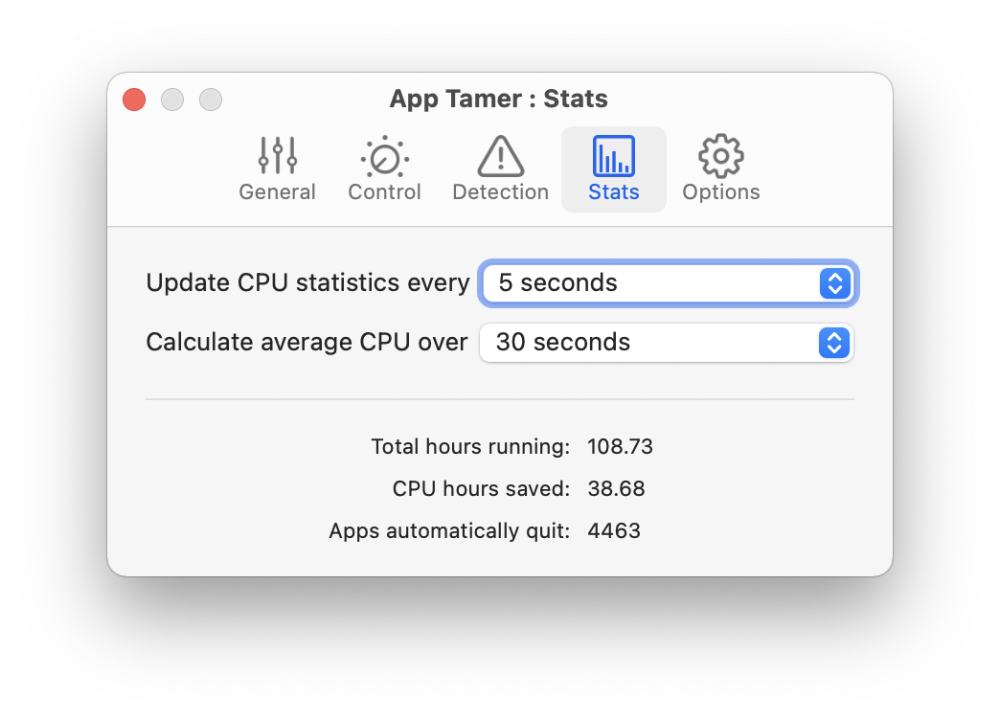
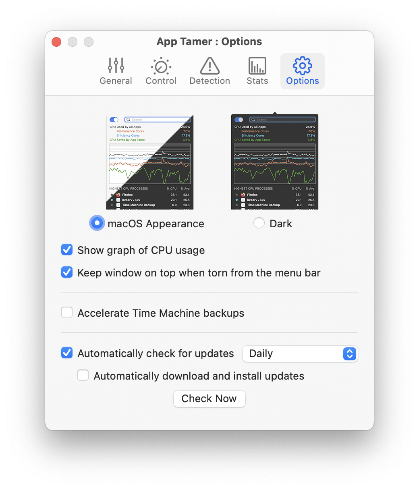

App Tamer Help
App Tamer HelpPreferences
You can access your App Tamer preferences from the utility menu. Just control-click on App Tamer's icon in the menu bar or click on the utility icon in the lower right corner of App Tamer's window, then select Preferences from the menu.
The preferences are split into five tabs, as follows.
General

Automatically start at login
Turn on this checkbox to have App Tamer automatically launched when you log in.
Show App Tamer in the Dock
App Tamer can appear in the Dock as a regular application, or you can turn this checkbox off and access it solely from its icon in the menu bar.
Show App Tamer in the menu bar
This turns App Tamer's menu bar icon on and off. You'll generally want to keep it on because it provides quicker access to App Tamer's controls, as well as a useful indicator of how much CPU is being used.
Colorize the menu bar icon as CPU usage increases
As applications use more CPU, App Tamer's icon in the menu bar will go from black-and-white to yellow to red. This gives you a quick indication of how much CPU is being used, allowing you to easily see when an application is monopolizing your processor.
Display CPU usage next to the menu bar icon
When this option is on, App Tamer will show you the percentage of CPU being used as an exact number.
Show usage of performance and efficiency cores
This option is only displayed on Apple Silicon powered Macs. Turning it on shows two additional numbers to the right of the CPU usage, giving separate percentages for the performance and efficiency cores. The performance core number is followed by a 'P', which the efficiency core's percentage is marked with an 'E'.
Control

Do not slow or stop apps if power is plugged in and battery is charged above X%
If you're using App Tamer primarily to conserve battery power on your laptop, turning this option on will make it slow and stop your applications only when power needs to be conserved. This will lengthen your runtime while on battery and speed recharge time when you plug back in.
You can fine-tune this setting by choosing the percentage of available battery charge at which App Tamer stops managing your apps.
Do not slow or stop apps after the Mac has been idle for more than X minutes
If you'd like all applications to run at full speed when you're away from your Mac, turn on this setting. Set the delay to specify an idle time long enough that you're not just pausing to read something on-screen, but have actually left your Mac idle.
Wait X seconds after starting up or waking from sleep
After your Mac starts up or wakes from sleep, applications often need some time to do housekeeping to update themselves for the system's new state. This delay gives them a short window of time to do that.
Wait X seconds before slowing or stopping an app
This is an important setting. You generally want to leave a delay between the time an application is sent to the background and the time when App Tamer stops it. Many applications don't actually put data onto the clipboard until they're in the background, so you need to give them time to do this. Also, many people will click in a web browser to start downloading a file and then switch away, but the download doesn't actually start for 5 or 10 seconds. Allowing a little time for 'things to settle' will make your App Tamer experience much smoother.
Wait X minutes for apps to launch
App Tamer gives an application a certain amount of time to launch before it will consider stopping it. If you double-click on Photoshop, for example, and then switch to another app while you're waiting for Photoshop to finish launching, you want App Tamer to let Photoshop complete its startup processing. Make sure this setting is long enough to allow that to happen.
Wake stopped apps every X minutes
Applications and OS X need a little time every now and then to take care of routine maintenance tasks, cleanup, etc. App Tamer wakes all applications for an instant to allow these things to happen. This setting determines how often it does that.
Hide applications when they are stopped
This setting lets you automatically hide all of the windows of a slowed or stopped application to indicate that it's not running and to keep it out of the way. Clicking on the application's icon in the Dock or using command-tab to switch to it will bring it back into view and wake it up.
Detection

Notify me whan an application exceeds X% CPU for longer than Y seconds
App Tamer will notify you whenever an application uses an excessive amount of CPU, where "excessive" is defined by these numbers.
The alert will give you the option to allow the usage to continue for the time being, slow or stop the app, or permanently ignore any further excessive usage.
Don't notify me about these applications
Adding an application to this list will prevent App Tamer from warning you about its CPU usage, even if it goes above the notification threshold.
Note that when you get a notification about an app and choose to ignore its high usage, the application is automatically added to this list. To turn detection back on for that application, return here and remove the app from the list.
Warning: Setting a low notification threshold will cause App Tamer to use more CPU time itself, as it has to monitor all of your applications more closely.
Stats

Update CPU statistics every X seconds
This determines how frequently App Tamer updates its CPU statistics. The more frequently you choose to update the stats, the more CPU time App Tamer itself will use. We recommend setting the interval to 3 seconds or more.
Calculate average CPU over X seconds
App Tamer's calculates average CPU usage by measuring each application's CPU usage over a certain period of time. This menu allows you to select that length of time.
Total hours running, CPU hours saved, and Apps automatically quit
These are statistics that App Tamer keeps to let you know what it's been doing for you. The measurements are cumulative over the entire time you've had App Tamer installed and running.
Options

Appearance
App Tamer's main window normally follows the system appearance to integrate seamlessly with the rest of the macOS user interface. Previous versions of App Tamer used a dark appearance, and you can choose that if you prefer it.
Show graph of CPU usage
The graph of CPU usage that's displayed at the top of App Tamer's window can be hidden if you prefer to just have lists of running and tamed processes. You can also turn it on and off directly from the main window by Control-clicking on the graph or on the CPU statistics in the window.
Keep window on top when torn from the menu bar
If you click on App Tamer's icon in the menu bar, its window drops down like a menu would. If you click the top of that window with the mouse and drag it away from the menu bar, it then turns into a regular window that will stay on screen while you do other things.
Turning on the "Keep window on top" checkbox makes that window float above other windows on your screen so it's always visible.
Accelerate Time Machine backups
Normally, macOS runs Time Machine backups with a low priority so they don't impact system performance. This can sometimes make backups take a long time to finish. Turning on this checkbox forces Time Machine backups to run with a higher priority, making them complete much faster, but this may impact the performance of other applications due to Time Machine's CPU and disk activity.
Automatically check for updates
We periodically update App Tamer with new features and compatibility fixes. Turning this option on will allow App Tamer to contact St. Clair Software to check if there is a new version available. You can use the menu to tell it how often to check (hourly, daily, weekly, or monthly).
The "Automatically download and install updates" checkbox will keep App Tamer up to date automatically, without putting up any alerts that ask you to download or install each update.
The Check Now button does exactly that - checks immediately to see if there is an update available.